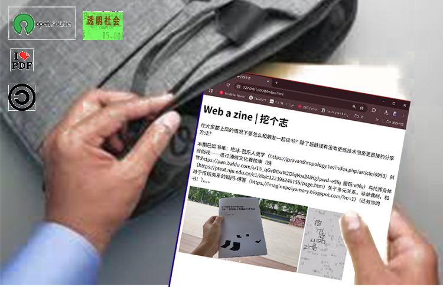

Web a Zine系列旨在摆脱传统印刷媒体的阅读和传播思维。相反，它通过收集、转化和打印网页的过程，探索超文本阅读和分享的可能性。 The Web a Zine series aims to break away from traditional print media reading and dissemination thinking. Instead, it explores the possibility of hypertext reading and sharing through the process of collecting, transforming, and printing web pages.